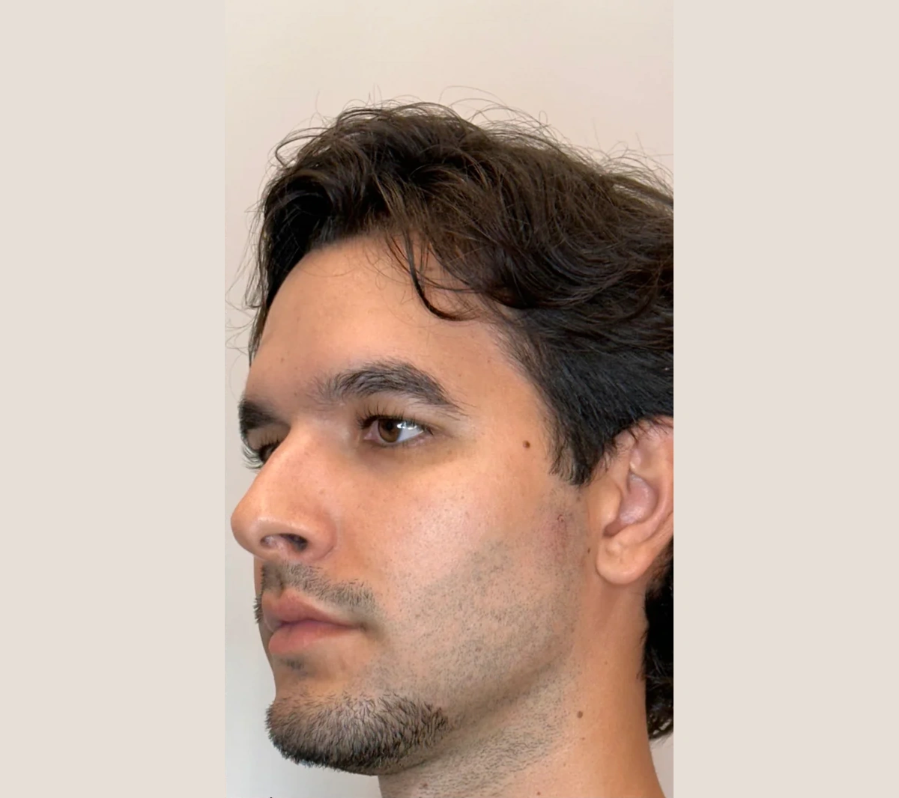
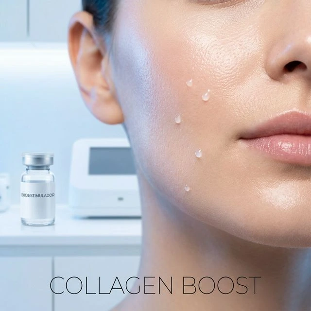
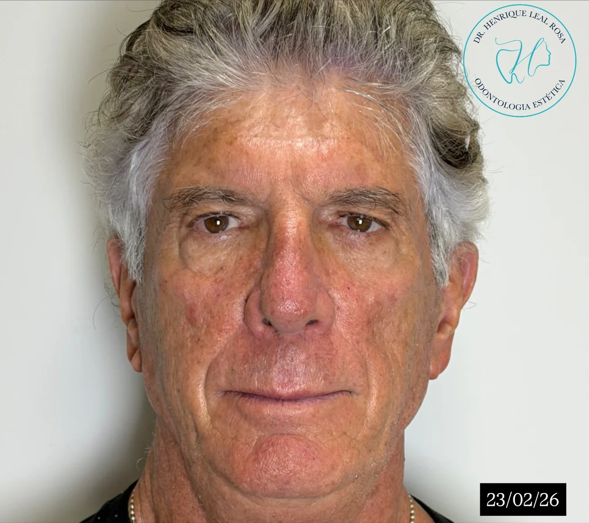
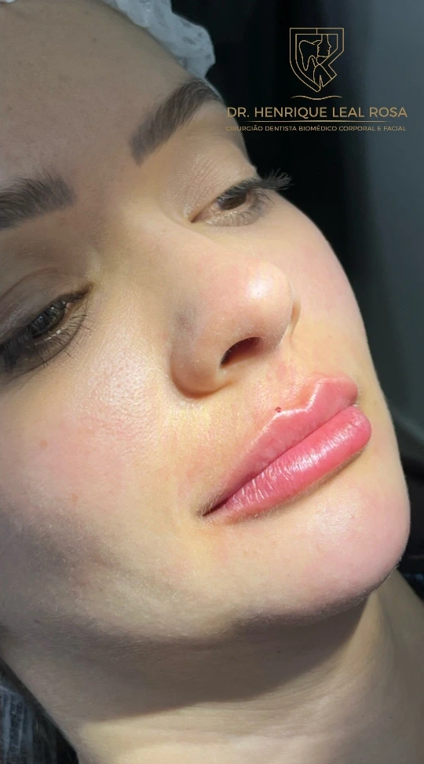
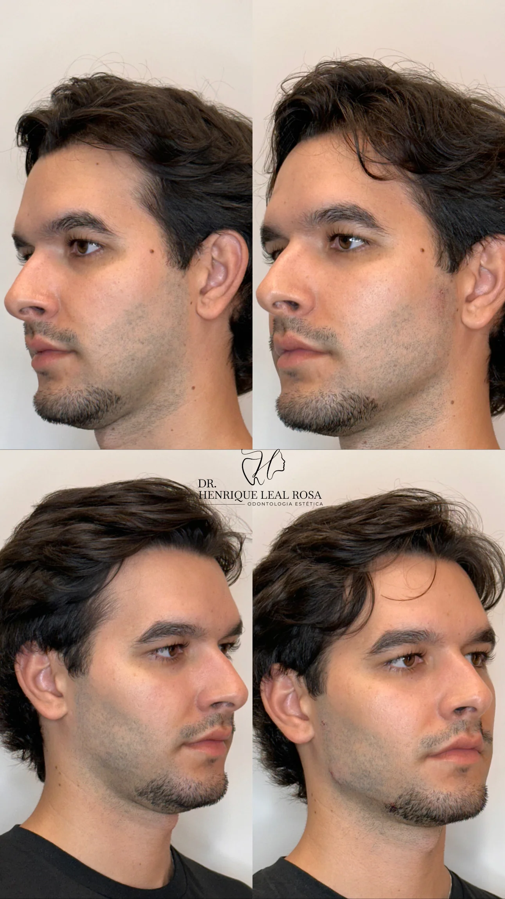

Orientações práticas, dúvidas frequentes e artigos sobre tratamentos faciais e corporais, com foco em segurança e naturalidade.
 Harmonização Facial
Harmonização Facial
Descubra o que é verdade e o que é mito sobre a harmonização facial. Entenda como o procedimento preserva a naturalidade e valoriza seus traços em Curitiba.

Harmonização FacialGuia completo sobre a estruturação mandibular e do mento masculino. Linhas firmes, ângulo reto e sofisticação no consultório do Dr. Henrique Leal em Curitiba.
 Toxina Botulínica
Toxina Botulínica
Entenda o conceito de toxina botulínica preventiva, como evitar que rugas de expressão se tornem marcas profundas na pele e os cuidados essenciais.
 Toxina Botulínica
Toxina Botulínica
Descubra fatores que influenciam na durabilidade da toxina botulínica e como manter seu rosto descansado e sem rugas por mais tempo em Curitiba.
 Fios de PDO
Fios de PDO
Conheça a tecnologia dos fios de polidioxanona (PDO), técnica internacional aprendida na Coreia do Sul para reposicionar tecidos e estimular colágeno.
 Fios de PDO
Fios de PDO
Comparativo completo entre fios de tração e bioestimuladores injetáveis para tratar flacidez e perda de contorno facial em Curitiba.

BioestimuladoresAnálise comparativa das principais marcas de bioestimuladores de colágeno do mercado. Saiba como escolher o melhor tratamento em Curitiba.

BioestimuladoresDicas clínicas e protocolos modernos para recuperar a firmeza do pescoço, papada e contorno facial sem cirurgia.

Preenchimento LabialDescubra a técnica Natural Lips do Dr. Henrique Leal: contorno sutil, hidratação profunda e respeito à anatomia da sua boca.
 Preenchimento Labial
Preenchimento Labial
O que fazer e o que evitar nos primeiros dias após o preenchimento labial para garantir uma cicatrização perfeita.
 Rinomodelação
Rinomodelação
Procedimento rápido e seguro para corrigir pequenas imperfeições no dorso nasal e levantar a ponta caída em Curitiba.
 Rinomodelação
Rinomodelação
Tudo sobre o nível de dor, anestesia local, cuidados essenciais e tempo de durabilidade da rinomodelação.
 Estética Íntima
Estética Íntima
Procedimento médico-estético delicado para recuperação de volume, hidratação e firmeza dos grandes lábios com total sigilo e conforto.
 Estética Íntima
Estética Íntima
Bioestimuladores, hidratação e fios na estética íntima: conheça os tratamentos que unem bem-estar, função e beleza.
Associação exclusiva de bioestimuladores de última geração e peptídeos bioativos desenvolvida pelo Dr. Henrique Leal em Curitiba.
 Protocolo Bioforce
Protocolo Bioforce
A ciência por trás dos peptídeos sinalizadores e como eles reprogramam a síntese de colágeno nas células da pele.
 Ozonioterapia
Ozonioterapia
Como o gás ozônio atua na oxigenação celular, combate a radicais livres e potencialização de resultados estéticos em Curitiba.
Entenda por que o ozônio medicinal é utilizado para acelerar a recuperação de procedimentos estéticos e reduzir edemas.
Protocolos integrados de estímulo folicular, nutrição capilar e combate à calvície masculina e feminina no Água Verde.

Terapia CapilarEntenda como a entrega direta de nutrientes no bulbo capilar desacelera o afinamento e estimula novos fios.
O Dr. Henrique Leal atende no Edifício Today's Office (Água Verde, Curitiba), com planejamento anatômico exclusivo para você.
Agendar pelo WhatsApp ↗